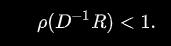

Había una vez un matemático visionario llamado Carl Gustav Jacobi, nacido en Potsdam, Prusia, en 1804.
Jacobi tenía una mente inquisitiva y apasionada por resolver los desafíos matemáticos más complejos de su época.
Su historia se entrelaza con el desarrollo de un método revolucionario en el campo de las matemáticas, que ahora lleva su nombre: el método de Jacobi.
A mediados del siglo XIX, la comunidad matemática estaba inmersa en la resolución de sistemas de ecuaciones lineales, un problema de gran relevancia en la ciencia, la ingeniería y la física.
Estos sistemas surgían en una variedad de aplicaciones prácticas, como la predicción del movimiento planetario, la conducción del calor en sólidos o la distribución de corrientes eléctricas.
Resolver estas ecuaciones era una tarea ardua y laboriosa, y Jacobi se propuso encontrar una forma más eficiente de hacerlo.
La historia de Jacobi y su método se desarrolla en su apasionante búsqueda de una solución a este desafío.
En sus noches de insomnio, Carl Gustav Jacobi se sumía en profundos pensamientos y cálculos. Llegó a darse cuenta de que podía diseñar un método que permitiera descomponer el sistema de ecuaciones en una serie de ecuaciones más sencillas, una a la vez.
Así nació el método de Jacobi, que se basa en la idea de iterar una y otra vez, mejorando constantemente las aproximaciones de las soluciones.
El método de Jacobi se convirtió en una herramienta esencial en el campo de las matemáticas aplicadas y la computación numérica. Su enfoque ingenioso de dividir y conquistar permitió a los científicos y los ingenieros abordar problemas complejos con mayor eficiencia y precisión.
La historia de Jacobi y su método nos recuerda el poder de la perseverancia y la creatividad en la resolución de problemas matemáticos, y cómo una idea brillante puede cambiar para siempre la forma en que enfrentamos los desafíos del mundo real.
La base del método consiste en construir una sucesión convergente definida iterativamente.
El límite de esta sucesión es precisamente la solución del sistema.
A efectos prácticos si el algoritmo se detiene después de un número finito de pasos se llega a una aproximación al valor de x de la solución del sistema.
La sucesión se construye descomponiendo la matriz del sistema A en la forma siguiente:
donde D, es una matriz diagonal y R es la suma de una matriz triangular inferior L y una matriz triangular superior U , luego R=L+U Partiendo de Ax=b podemos reescribir dicha ecuación como:
Luego,
Si a¡¡ ≠ 0 para cada i. Por la regla iterativa, la definición del Método de Jacobi puede ser expresado de la forma:
donde k es el contador de iteración, Finalmente tenemos:
Cabe destacar que al calcular xi^(k+1) se necesitan todos los elementos en x^(k), excepto el que tenga el mismo i.
Por eso, al contrario que en el método Gauss-Seidel, no se puede sobreescribir xi^(k) con xi^(k+1), ya que su valor será necesario para el resto de los cálculos.
Esta es la diferencia más significativa entre los métodos de Jacobi y Gauss-Seidel.
La cantidad mínima de almacenamiento es de dos vectores de dimensión n, y será necesario realizar un copiado explícito.
El método de Jacobi siempre converge si la matriz A es estrictamente diagonal dominante y puede converger incluso si esta condición no se satisface.
Para verificar la convergencia del método se calcula el radio espectral (p):

es la condición necesaria y suficiente para la convergencia, siendo R = L + U .
No es necesario que los elementos de la diagonal en la matriz sean mayores
(en magnitud) que los otros elementos (la matriz es diagonalmente dominante),
pero en el caso de serlo, la matriz converge.
El método de Jacobi se puede escribir en forma de algoritmo de la siguiente manera:
Un sistema lineal de la forma Ax=b con una estimacion inicial x^(0) esta dado por:
Usamos la ecuación x^(k+1)=D^-1(b-Rx^(k)), descrita anteriormente,
para estimar x. Primero, reescribimos la ecuacion de una manera más conveniente D^-1(b-Rx^(k))=Tx^(k)+C,donde T=-D^-1R y C=D^-1b.
vea que R=L+U donde L y U son las partes inferior y superior de A. de los valores conocidos:
determinemos T=-D^-1(L+U)como:
C es encontrado como:
con T y C calculadas, estiaremos x como x^(1)=Tx^(0)+C:
siguientes interaciones.
este proceso se repitira hasta que converja(i.e.,hasta que ||Ax^(n)-b|| sea pequeño).
la solucion despues de 25 interaciones es: